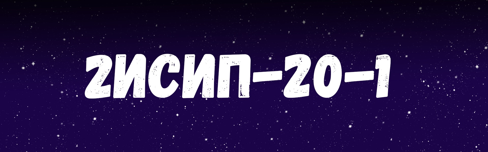

Главная
Другие проекты
Наша команда

Код страницы на четвертом этапе
На данном скриншоте показана структура страницы на четвертом этапе. Html файл на этом этапе не менялся.
На данном скриншоте представлен css код для четвертого этапа. На данном этапе мы отредактировани свойства класса middle (добавили внутреннее свечение), класса middle_li (Добавили анимацию при наведение на блок), а также сменили стиль главного текста в блоках.
На Главную......